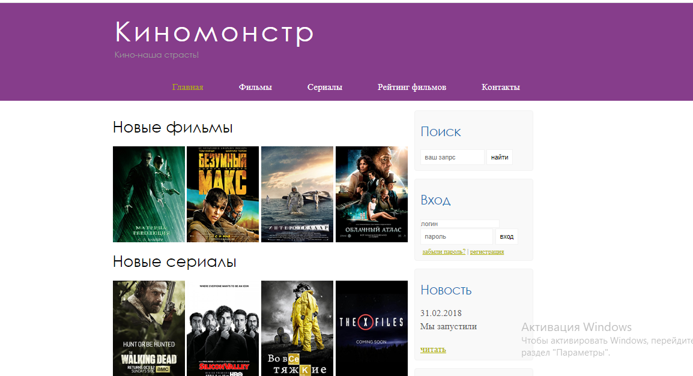

GULZAT ELEBESOVA
1. Front-end Developer
I'm responsible, highly motivated, interested in web programming and everything in its orbit person. I'm keen to gain more experience and knowledge in programming. My main experience is in front-end development but I also have a passion for design. Given that producing a modern website requires the combination of design, server technology, and the layer that users interacts with, I believe having experience in both design and development allows for making the most optimal user experiences
Contacts
- Location
Tokmok,kyrgyzstan
- Phone number
2. Skills
- HTML
- CSS
- JavaScript
- Phyton
- Flutter
- Adobe Photoshop, Illustrator, Figma
3. Code Example
Task: This code dose not execute properly. Try to figure out why.function multiply(a, b){
return a * b
};
4. Portfolio
Киномонстр
CloudBudget
Golden
5. Languages
- English - begining
- Russian — Fluent
- Kyrgyz — Native
6. Education
- Kyrgyz National University named after J. Balasagyn Faculty "Mathematics Informatics and Cybernetics"
- Globus "Computers users" 2009
- KARPOU 50 programmer
- FFC
- BeonMax